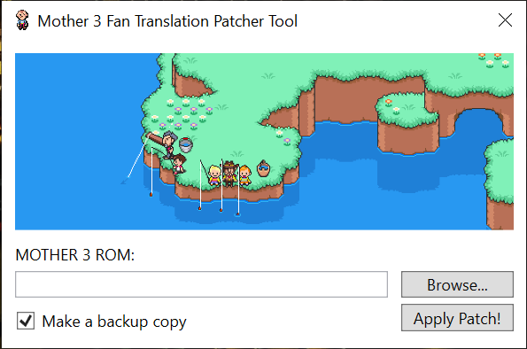

Mother3Patcher
A GUI Mother 3 Fan Translation patcher for Windows and macOS. Inspired by Tomato and JeffMan’s Mother 3 Fan Translation Patcher


Information
As of right now, only the WPF design for the application has been completed, the program can’t do anything yet as of right now.
Why?
The Mac Mother 3 patcher no longer works on newer macOS versions and I decided to write a new patcher that is compactible with newer macOS versions and runs on a newer version of .NET Core so it no longer requires installing .NET Framework as a Windows feature.
How to use
You will need to supply your own unpatched Mother 3 ROM file. I won’t tell you where you can acquire that.
In the very hypothetical case that you have imported an original cartrige from Japan and used very specialized dumping hardware (read: a Nintendo DS), select your ROM file by clicking on the “Browse…” button.
Make sure that you have “Make a backup copy” checked which will create a .bak version of the original ROM file. Then proceed with the patching by clicking “Apply Patch!”.
As of right now this patcher wont check if your dump is bad.
Dependencies
You will need the .NET Core SDK
For macOS you will also need XCode.
Acknowledgements
This patcher includes the UPS patcher by rameshvarun and the Mother 3 Fan Translation v1.4 by Clyde Mandelin and Jeffman.
This project is not affiliated with Nintendo, 1-UP Studio, HAL Laboratories, Shigesato Itoi or the Mother 3 Fan Translation Project.